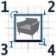
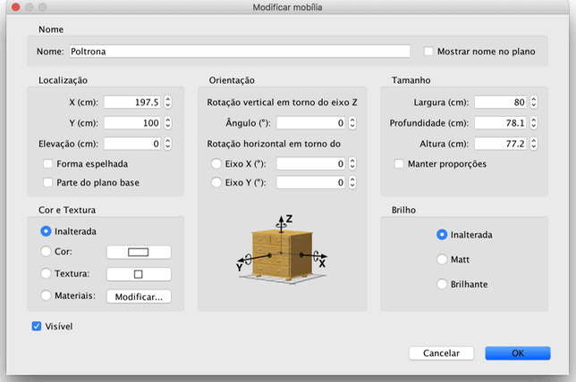

| Editanto mobílias | |||
Você pode editar a posição, tamanho e ângulo de uma mobília, tanto com o mouse ou com o menu
Mobília > Modificar.... Quando uma mobília está selecionada no plano, você pode também seu tamanho, elevação, ou ângulo utilizando um dos quatro indicadores que aparecem em cada canto da mobília selecionada.  |
|
Quando o ponteiro do mouse está sobre um desses cantos, ele muda para indicar que você pode clicar e
arrastar o canto para mudar o atributo desejado da mobília selecionada. Enquanto você pressiona o botão do
mouse, uma dica mostra o valor do(s) atributo(s) editado(s). Uma mobília também pode ser editada graças à sua janela de edição, dando um clique duplo na mobília desejada no plano da casa ou na lista de mobílias, selecionando-a e depois escolhendo Mobília > Modificar....  Na janela de edição da mobília, você pode modificar seu nome, ângulo de rotação, a abcissa (X) e a ordenada
(Y) de seu centro, a elevação do chão, larguar, profundidade, altura, cor, visibilidade, e se seu modelo
3D deve ser espelhado ou não. |
|